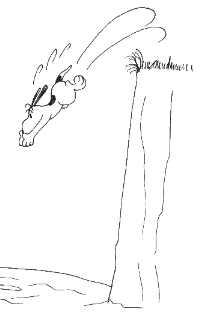

Since I started climbing, falling off has been an integral part of the sport. Partly this could be blamed on the fact that I started leading on about my eighth route, with virtually no experience at all. For the record I would not recommend this to .html novice. Keen to improve quickly Stu seemed to be a good source of information on leading, and in the pub one night I asked for his advice. Basically he said that learning to place good pro which will hold is essential (pretty obvious) and that there were two ways of going about it:
Somehow I don't think he expected me to take the latter option, as when I came back after the summer having taken several falls Stu just couldn't understand why I had taken that many falls. Stu at this point boasted that he had only ever taken three leader falls. Obviously I was doing something wrong. However during the course of term, it was discovered that Stu had actually taken more than three falls on his rope, and silenced the critics with this e-mail...
With regards to my earlier e-mail in which I claim to have taken "lots of falls" on this rope, despite earlier claims to having only ever taking three leader falls, I was of course referring to falls sport climbing, which as everyone knows don't count (although some of were quite big ;that 70-footer from the crux of Supercool at gordale, well I filled me pants at that one.) The point being that my only trad leader falls (not counting resting on gear are:
This is because I am too scared to climb anything hard above my own gear, whilst actually falling on it breaks me out in a rash, did you know that when I reached the top of mark of the beast (sport route, sorry) to find there was no abseil chain and I would have to jump onto my last bolt a full ooh three feet below me , I hung on the final holds for two minutes until Random Factor Stark pulled me off, squealing as I went. So you see (last commment directed at pete only) real climbers don't fall, we get scared and back off.
Well, before I get a reputation as reckless I thought I would quickly list my falls:
If Stu's not counting sport routes or hangdogging then neither am I. So
there...
At the end of all that, what have I learnt that could act as advice for
other novice climbers in their first year? With regards to falling,
natural pro is always dodgy and even what you might consider bomber may
not always be. However, the more you fall, the less it worries you. I
find that being above my gear on a hard crux move is less scary than it
used to be. This means that you can concentrate more clearly on the moves
at hand. At the end of the day though there is one simple rule. Don't
fall. Learn to downclimb to minimise any fall you might take. Pushing
yourself on hard routes is not a bad thing to do, but best done as a
second to start with, or on lead when you know you can place pro well. If
a route has dodgy pro, there is no shame in top-roping it first. Not
everything has to be done on-sight (although it's nice.) Otherwise stick
to routes you know you should be able to climb well.
As for me, I'm going to stick to HVS/VS climbs with solid pro until I've learnt to climb properly. That way I shouldn't ever feel the need to fall off anymore!
Clamber hard, Plunge safe...

Nicki's Leap: By Paul Palfreyman